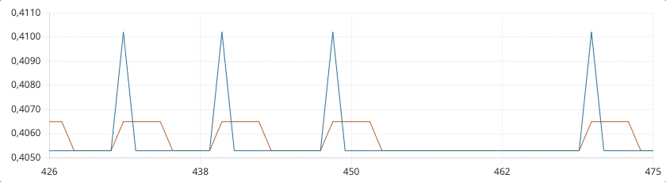
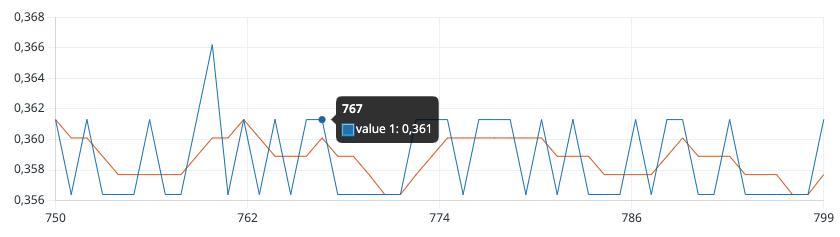
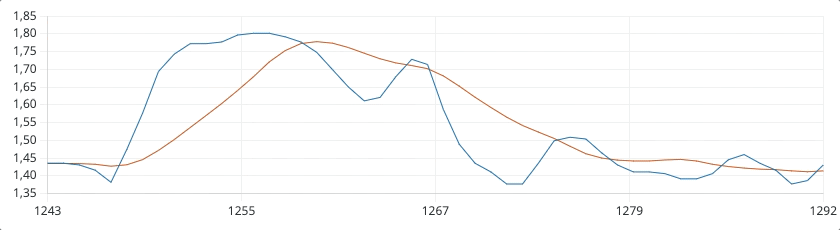
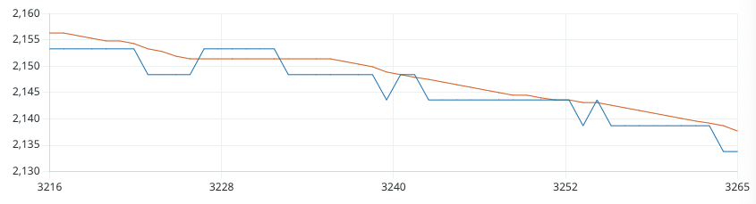
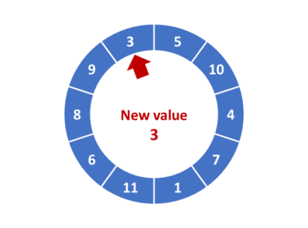
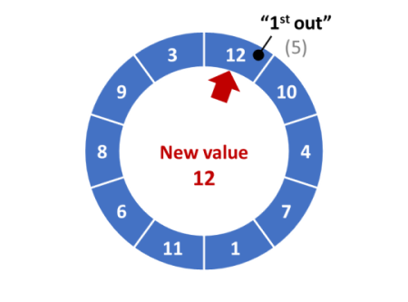

Exp 2) Filtro de Média Móvel
O objetivo principal é avaliar o desempenho de um filtro de média móvel (variando de 4 à 10 passos) usado para filtrar dados de iluminação capturados usando um sensor de luz (LDR). Este algoritmo deve ser executado dentro de uma ISR à taxa de 1 à 10 Hz. O valor filtrado deve ser usado para realizar um controle de intensidade luminosa de um led.
Hardware previsto
Componentes necessários:
- LDR;
- Resistor de 10 Ohms (usado com LDR);
- Resistor de 330 Ohms (para led);
- Led.
Conexões:
- Conectar em série o LDR e o resistor de 10 KOhms; o ponto central deve ser conectado à entrda analógica A0 do Arduíno; a ponta "livre" do resistor deve ser conectado ao terra (GND) e a ponta "livre" do LDR deve ser conectato ao +Vcc (% Volts);
- Concetar em série o LED e o resistor de 330 Ohms; conectar uma das pontas ao terra (GND) e o outro lado ao pino 5 (saída PWM) do Arduíno.
Software
A equação geral de um filtro de média móvel é dado abaixo:
Onde: saída filtrada; amostra atual; instante de amostragem; número de passos do filtro; uma amostra passada do sinal à ser filtrado.
A equação anterior pode ser modificada para:
Onde: .
Note que necessitamos amostras atrasadas do sinal de entrada .
ou generalizando:
Ou você pode rever a teoria em: Filtro de Média Móvel.
Implementação simples
Exemplo 1: Filtro de média móvel simples de 4 passos.
Neste caso, o diagrama de fluxo de sinal deste filtro fica como mostra a figura abaixo:

Código exemplo:
xxxxxxxxxx/*** Testando filtro de média móvel de 4 passos Fernando Passold, em 18/06/2024 Dado de entrada: valor lido por um LDR em série com resistor de 10 KOhms, o ponto central está conectado à entrada analógica A0; a outra ponta do resistor está no GND e a outra ponta do LDR está em 5 Volts (Vcc) Este LDR está "acoplado" com um led externo conectado no pino 5 (saída PWM), cujo duty-cycle poderia ser controlado****/const byte analogPin = A0; // pino (A/D) que recebe sinal analógicoconst byte PIN_LED = 5; // Led à ser "controlado", no pino 5 (ou 6)float b;float x, x1, x2, x3; // sinal de entrada + amostras atrasadas até x3=x[n-3]float y; // saída filtradavoid Init_Filtro(void){ x1=0; x2=0; x3=0; y=0; b=1.0/(float)NUM_SAMPLES; // peso de cada amostra para este filtro}void setup() { // put your setup code here, to run once: pinMode(PIN_LED, OUTPUT); digitalWrite(PIN_LED, LOW); // led inicia apagado Serial.begin(115200); // setup serial while (!Serial) { ; // Aguarda até que a porta serial esteja pronta - normalmente 10 ms } Init_Filtro(); Serial.println(" "); Serial.print("Filtro média móvel "); Serial.print(NUM_SAMPLES); Serial.println(" amostras"); Serial.print("b="); Serial.println(b, 4); Serial.println(" "); // apenas pula 1 linha delay(500); // pausa para usuário ver valor de b}float Filtro(void){ float y = 0; y = b*x + b*x1 + b*x2 + b*x3; // atualizando amostras passadas de x: x3 = x2; x2 = x1; x1 = x; return y;}void loop() { // put your main code here, to run repeatedly: x = analogRead(analogPin)*(5.0/1024.0); // converte para faixa 0 á 5 Volts y = Filtro(); Serial.print(x, 4); Serial.print(" \t"); Serial.println(y, 4); delay(100); // para tentar garantir taxa de amostragem de 10 Hz}O código anterior deve gerar uma saída como (usando "Serial Plotter" do Arduino):

A linha azul representa o sinal medido (de entrada), e a linha vermelha, o sinal filtrado .
Este filtro reage mais ou menos rápido mas pode ser percebeido que neste caso, não é capaz de remover todas as oscilações. Por exemplo:

Provavelmente aumentando o número de passos, se consiga melhorar a rejeição aos picos.
Exemplo: Seja , um filtro de média móvel de 10 passos. Ou número qualquer de passos ←NUM_SAMPLES.
xxxxxxxxxx/*** Testando filtro de média móvel de NUM_SAMPLES passos Fernando Passold, em 18/06/2024 Dado de entrada: valor lido por um LDR em série com resistor de 10 KOhms, o ponto central está conectado à entrada analógica A0; a outra ponta do resistor está no GND e a outra ponta do LDR está em 5 Volts (Vcc) Este LDR está "acoplado" com um led externo conectado no pino 5 (saída PWM), cujo duty-cycle poderia ser controlado****/const byte analogPin = A0; // pino (A/D) que recebe sinal analógicoconst byte PIN_LED = 5; // Led à ser "controlado", no pino 5 (ou 6)float b;float x[NUM_SAMPLES]; // sinal de entrada + amostras atrasadas até x3=x[n-3]float y; // saída filtradavoid Init_Filtro(){ for (int i = 0; i < NUM_SAMPLES; i++) { x[i] = 0; } b=1.0/(float)NUM_SAMPLES; // peso de cada amostra para este filtro}void setup() { // put your setup code here, to run once: pinMode(PIN_LED, OUTPUT); digitalWrite(PIN_LED, LOW); // led inicia apagado Serial.begin(115200); // setup serial while (!Serial) { ; // Aguarda até que a porta serial esteja pronta - normalmente 10 ms } Init_Filtro(); Serial.println(" "); Serial.print("Filtro média móvel "); Serial.print(NUM_SAMPLES); Serial.println(" amostras"); Serial.print("b="); Serial.println(b, 4); Serial.println(" "); // apenas pula 1 linha delay(500); // pausa para usuário ver valor de b}float Filtro(void) { float y = 0; int i; for(i = 0; i < NUM_SAMPLES; i++) { y += b*x[i]; } // atualizando amostras passadas de x for(i=NUM_SAMPLES-1; i>0; i--){ x[i]=x[i-1]; } return y;}void loop() { // put your main code here, to run repeatedly: x[0] = analogRead(analogPin)*(5.0/1024.0); // converte para faixa 0 á 5 Volts y = Filtro(); Serial.print(x[0], 4); Serial.print(" \t"); Serial.println(y, 4); delay(100); // para tentar garantir taxa de amostragem de 10 Hz}Este código produz a seguinte saída:

No gráfico anterior, a linha azul se refere aos valores brutos lidos pelo sensor e a linha vermelha representa estes dados filtrados.
Note que o LDR está tendo sua iluminação bloqueada (propositalmente) em certos instantes de tempo (motivo das perturbações).
Note que como o fitlro é de 10 passos. Porém esta quantidade pode provocar um certo atraso na resposta (no sinal filtrado).
Este filtro pode ser útil para filtrar situações como a mostrada na figura abaixo:

Apesar do sensor parecer se encontrar "estático" (sem perturbações visuais aparentes), seu sinal oscila ou apresenta certos picos, e neste caso, percebe-se que o filtro é capaz de suprimir estes picos.
Você pode tentar testar este filtro e outros usando um arquivo de dados gerado com capture_serial_data.py (detalhado em: Capturando e Analisando Dados (via porta serial)), e depois eventualmente usar a função filter do MATLAB para avaliar os resultados que poderiam ser obtidos.
Implementação usando "Buffer Circular"
Um buffer circular ou circular é uma estrutura de dados de tamanho fixo comumente usada em aplicativos de software em tempo real para armazenar um número predefinido de valores. A analogia de um anel com um número fixo de posições é bastante útil para capturar a natureza FIFO (First-In-First-Out) de tal estrutura de dados. Quando o buffer estiver cheio, o primeiro elemento que foi gravado (“In”) no buffer é o primeiro a ser substituído (“Out”) pelo próximo elemento recebido.
Os buffers circulares são particularmente úteis em situações em que os dados são continuamente amostrados e os cálculos precisam ser feitos usando um tamanho de amostra predefinido ou é necessária uma visualização contínua.
Neste caso, definimos um "anel" (vetor) do tamanho requerido para o número de amostras e simplesmente controlador um apontador para a posição da próxima amostra. Enquanto o final deste buffer não é atingido, nenhum valor é sobre-escrito, mas depois que o número máximo de amostras é ultrapassado, os novos dados passar a sobre-escrever os dados mais antigos. A tabela a seguir ilustra o funcionamento de um buffer circular para 10 amostras::
| Primeiras 4 amostras | 10a-amostra | 11a-amostra |
|---|---|---|
 |  |  |
Mais referências:
Exemplo 3: Um código mais aprimorado usando "buffer circular":
Código:
xxxxxxxxxxvolatile int y; // Variável que contém a nova amostra lidavolatile int samples[NUM_SAMPLES]; // Array para armazenar as últimas 10 amostrasvolatile long sum = 0; // Soma das últimas 10 amostras (usando long para evitar overflow)volatile int sampleIndex = 0; // Índice circular para o array de amostrasvolatile int numSamplesCollected = 0; // Contador de amostras coletadasvoid setup() { // Configuração inicial do Arduino Serial.begin(9600); // Inicializa o array de amostras com zeros for (int i = 0; i < NUM_SAMPLES; i++) { samples[i] = 0; } // Configura a interrupção para leitura do sensor attachInterrupt(digitalPinToInterrupt(2), readSensor, RISING);}void loop() { // O loop principal pode estar vazio, pois a leitura e o cálculo são feitos na interrupção}void readSensor() { // Simulação da leitura do sensor y = analogRead(A0); // Suponha que o sensor está conectado ao pino A0 // Remove a amostra mais antiga da soma sum -= samples[sampleIndex]; // Armazena a nova amostra no array samples[sampleIndex] = y; // Adiciona a nova amostra à soma sum += y; // Avança o índice circular sampleIndex = (sampleIndex + 1) % NUM_SAMPLES; // Conta o número de amostras coletadas até que tenhamos coletado 10 amostras if (numSamplesCollected < NUM_SAMPLES) { numSamplesCollected++; } // Calcula a média móvel continuamente int movingAverage = sum / numSamplesCollected; Serial.println(movingAverage); // Envia a média móvel para o Serial Monitor}Explicação do Código
- GPTArray de Amostras:
samples[NUM_SAMPLES]armazena as últimas 10 amostras. - Índice Circular:
sampleIndexindica a posição atual no array onde a nova amostra será armazenada. - Soma das Amostras:
sumé a soma das amostras no array, usada para calcular a média. - Contagem de Amostras:
numSamplesCollectedmantém o número de amostras coletadas até que atinja 10.
Funcionamento
Inicialização: No
setup, inicializamos o array de amostras e configuramos a interrupção.Interrupção: Em
readSensor, que é chamada a cada interrupção:- Lemos a nova amostra e a armazenamos em
y. - Atualizamos a soma removendo o valor antigo na posição atual e adicionando o novo valor.
- Atualizamos o array de amostras na posição indicada pelo
sampleIndex. - Avançamos o
sampleIndexde forma circular. - Contamos o número de amostras coletadas até termos 10.
- Calculamos a média móvel continuamente, dividindo a soma pelo número de amostras coletadas até o momento (até atingir 10).
- Lemos a nova amostra e a armazenamos em
Essa abordagem garante que a média móvel das últimas 10 amostras é sempre atualizada de forma eficiente a cada nova leitura de amostra.
Atenção: código sugerido pelo ChatGPT.
Outros testes?
Note que você poderia aumentar a taxa de amostragem do sinal do LDR, realizar uma FFT sobre uma amostra deste sinal e descobrir os componentes ruidosos presentes neste sinal e então aplicar um filtro passa-baixas sobre o sinal do LDR. Eventualmente o resultado desta filtragem será igual ou melhor ao filtro de média móvel com a certeza de que, neste caso, você estará filtrando componentes não desejadas no sinal de entrada (ruídos).
🌊 Fernando Passold 📬 ,